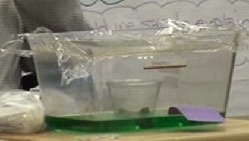

Thus far in the water cycle exploration, students had mostly focused on evaporation and spent little time pondering condensation. To address this, Bonnie set up a demonstration with water inside a covered aquarium. She hoped students would consider the entire evaporation/ condensation cycle. Her plan was for students to tackle explaining what was happening in the covered aquarium while they were also running their evaporation experiments with various liquids. 
Bonnie used food coloring to make a layer of green water inside the aquarium. She put an empty cup in the aquarium, covered the aquarium with plastic, and set a bag of ice on the plastic so it was over the cup inside, as shown in the photo.
The cold ice facilitated condensation on the inside of the plastic wrap, but unintentionally introduced a new issue. While the bag of ice was sitting on the plastic wrap, moisture formed on its surface and pooled on the top of the plastic wrap. Students wondered if water was leaking through the bag, and if that water was leaking through the plastic wrap covering the aquarium. Were the water drops on the inside of the aquarium cover actually from leaks through plastic?
Adrian was one of the first students to wonder about water leaking. In response to Adrian's idea, Bonnie left the ice on top of the aquarium for 48 hours. In the video below Bonnie invites Adrian to observe the result.
Video 1
Examining the video.
In the video, Adrian maintains his position that there are tiny microscopic holes in the plastic that allow water to pass through. What evidence or reasoning supports Adrian's ideas? How does Bonnie support a scientific environment in the classroom?
To address Adrian's continued concern, Bonnie wrapped an ice pack with paper towels, sealed it in a plastic bag, then placed the bag on the top of the covered aquarium. In the video below, the class is coming to a consensus about what they are doing and why.
Video 2
Examining the video. Andrew poses a question in lines 50 and 51 of the transcript, asking about the purpose of sealing the ice pack. What does Beau's response in lines 61 to 63 imply about his understanding of evaporation? What questions could you ask Beau to better understand his ideas?
In lines 68 and 69, how does Ella go beyond answering Bonnie's question? Could her answer be influenced by the class's exploration of different liquids' evaporation?
Suppose Adrian's idea that tiny holes in the plastic allow water to pass through is not influenced by this experiment. What would be some responsive moves a teacher could make that would be in line with scientific practice?
Bonnie opened the next science session by asking students to summarize the previous science class. As you will see in the video below, students are still uncertain about whether water leaks through the plastic. However, it seems reasonable to them that leaks might not be the only source of the water droplets on the plastic bag of ice or inside the plastic covering over the aquarium.
Video 3
The question of whether the plastic leaks, even microscopically, lingered throughout the remainder of the water cycle exploration. However, the recognition that at least some of the water must come from somewhere else provided an important opening that encouraged students to consider other mechanisms for the water that appears on the outside of the plastic bag or similar cold objects. As you will see in the next node, this led to students coming up with an important idea.
Examining the video. What is Bonnie's demeanor as Adrian recants his earlier idea, and as Sean expresses some indecision? How is eliminating leaks, or at least recognizing the possibility of other causes for the moisture on the outside of the bag, a major step towards an understanding of condensation? However, Bonnie remained fairly stable in her demeanor. What could be some reasons for her lack of change?
Reflection. As a teacher, how do you feel about allowing students to move forward with misunderstandings on some issues? What criteria could be used to help you decide whether or not to do so?